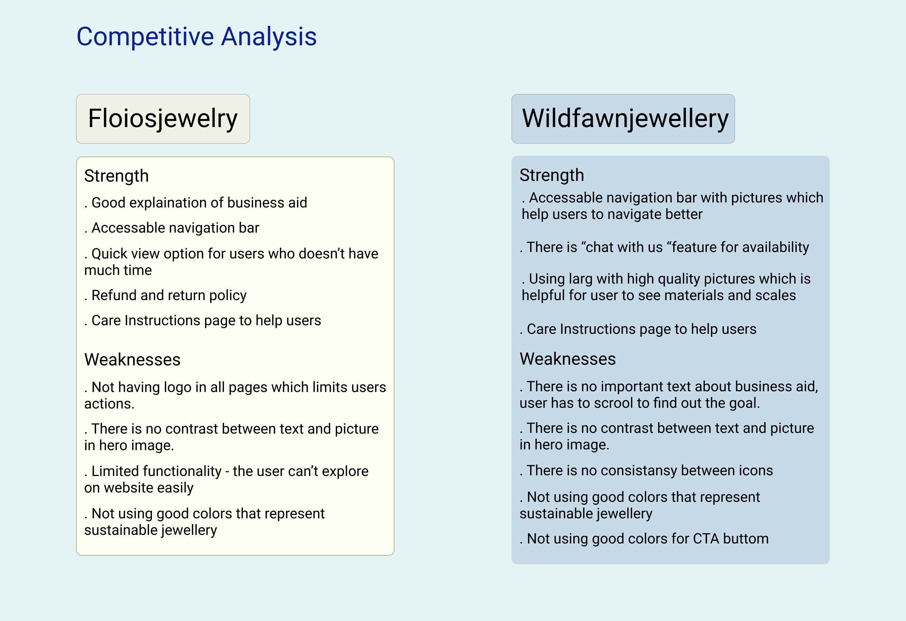
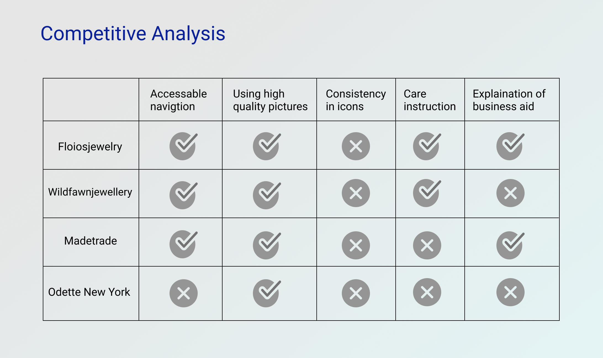
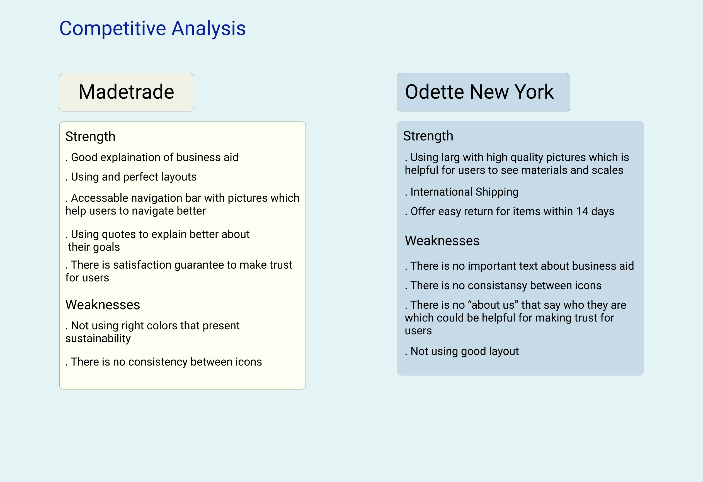
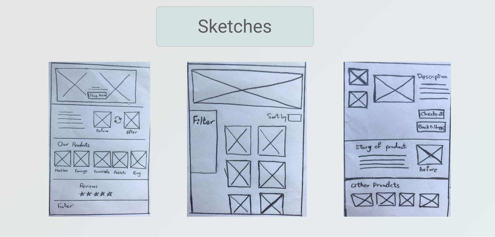

Overview
Poco Patina is a small jewellery shop that started a year ago in the pandemic. The owner is a woman who loves to create jewelleries from useless stuff and re-inventing new pieces of jewellery.
Business Goals: Creating remarkable recyclable jewellery against consumerism in American culture and encourage people to use redesign jewellery.
Problems:
How can we meet the business needs of Poco Patina while meeting the needs of the target users? The business needs a platform to show and sell its products what’s more raise awareness about recyclable jewellery while users don’t have any clue what is recyclable jewellery and how to take care of them. They also need unique artistic jewellery with affordable price. How can we be a bridge between business and users needs?
Solution:
Creating an e-commerce website that makes purchasing jewellery from poco patina, both a streamlined and user-friendly experience.
Design thinking process

Research
Survey:
My goal was to understand the user’s decision-making process when buying jewellery. I started research from Survey method which gave me quantitative data.
I learned that most participants moderately or slightly aware of sustainable or recyclable jewellery, they prefer to buy jewellery at store and the majority of them would rather to buy jewellery under $100.
I also learned that they give jewellery as gift and every time they see something nice, they will buy it.
In my survey I asked participants when they hear “sustainable jewellery” what color(s) come in their head and from their response I learned that Green, Silver and Gold give the feeling of sustainability to them.
User Interview
I held 1:1 user interviews with four research participants from different countries around the world on Zoom to learn about their motivations, needs, and pain points when purchasing jewellery. I asked about their positive and negative experiences with buying jewellery online or at store to know how they usually go through this journey and their behaviour.
I learned that they prefer to buy jewellery at store to see the materials but they have had positive experience to buy jewellery online. (mostly on Instagram)
I also learned that they almost wear jewellery in all occasions like on dates, wedding, birthday party and so on and they said they match jewelleries with their clothes.
Another key finding was all the participants said because they wear jewellery every day, they prefer to buy jewellery with reasonable price not expensive.
Some key quotes were:
“They are so expensive, I use jewellery every day, I don’t mind if they’re cheap “
“I don’t know what is exactly sustainable jewellery but if I could buy something and save the earth, I would embrace it “
Some other notable findings were:
- All 4 participants have purchased jewellery from famous brands such as Cartier, Swarovski, Gucci, but they did not care about brands and buy whatever they like.
- All 4 participants said that they want to see high quality pictures with details from jewellery.
- 3 out of 4 participants had jewelleries that they had gotten as gift and they do not use them anymore but they were not interested to re-design them though or at least never thought about this.
- All participants said that they are interested to buy jewellery online during covid-19 pandemic
- All 4 participants have complained about lack of information in description when they are buying jewellery online disappointed them.
Competitive Analysis
I conducted a competitive analysis to see how existing products are meeting our target users needs.
There are not many business like Poco Patina with the exact goal but I focused on 4 competitors such as Floiosjewelry, Wildfawnjewellery, Madetrade and Odette New York. I went through their websites and looked for strengths and weaknesses.
  Key takeaways
It’s clear that there is a need for a more accessible, simplified jewellery purchasing process. Also based on my finding from user interviews, there is a need to raise awareness about sustainable jewellery.
To solve this problem, it is important to design a website that:
- Show the process of making recyclable jewellery
- Give readily accessible information about sustainable jewellery
- Help users to find their needs quickly
Define
User Persona
I created a user persona based on answers received from my user interviews. Sarah is a 34-year-old art teacher, she loves and buy jewellery a lot but she has recently started to know more about environment and try to protect it, she knows consumerism can destroy earth but she cannot put curb on her interest to jewelleries. She is looking for a way to buy cheap and unique jewellery on the other hand do not hurt environment.

User Flow & Task Flow
For these user flows, I focused on one journey my user persona, Sarah, would take: She explores on the website and buy Earrings.


Key Takeaways:
While the Research stage helped me understand what design solutions might help Poco Patina, the Define Stage helped me develop what those design solutions will actually look like. By focusing on one user persona, I was able to conceptualize how a user like Sarah would navigate my potential design solutions, and figure out what user flow to focus on when designing and later, testing.
Moving forward to the Design stage, I now have a better idea of how to develop potential solutions including a streamlined process, and comprehensive, straightforward layout for the homepage.
Design
Mood Board
For the first step of mood board method, I collected photos that gave me feels of sustainability or whatever I like in jewellery and made this mood board. I tried to use those colours that participants said in survey.

Sketches
I created multiple sketches of the homepage for Poco Patina to explore potential layout options while keeping my user flow, task flow and site maps in mind. This process helped me think through how to organize content and include potential UI elements and design patterns.
Low fidelity wireframes
Based on these sketches, I created low fidelity responsive wireframes across mobile and desktop screens so users can access the site across devices and still have a consistent user experience. These main pages include: Homepage, Products Page and Item page.

UI kit & Branding
Based on all the information I gathered on research and mood board I started to create UI kit.
In terms of sustainability, I designed Poco Patina’s brand and logo as friendly, minimalist and creative.
I found that many sites that sell sustainable jewellery do not use much colour instead use colors on their photos, so I decided to use colors that represent sustainability and based on participants response on survey I used green, silver and orange as brand colors but maintained a muted color palette so it would not be too overwhelming (or too flashy) for users.
In terms of accessibility I checked that all colors are accessible for color blinds and made sure that create a color blind friendly palette and they can recognize colors easily and don’t get confused by colors.
I also made sure for accessibility there is contrast between colors and fonts and every components are readable.
As you can see in the picture bellow, there is contrast between colors so they can’t get confused.


High fidelity wireframe
I created high-fidelity wireframe of the main user flow, with elements from the UI kit I put together.
On homepage I put before and after picture of products to demonstrate the goal of the business and an accessible navigation bar to help users to navigate easily.
Based on research that users had positive experience from buying jewellery on Instagram I decided design something like Instagram that users can leave their comments, and it can be helpful to make trust for them.

Test
After developing the logo design, UI kit, and high-fidelity wireframe, the look and feel of the site is coming together. With every design decision made, I kept my persona, Sarah, and her needs and objectives in mind. Now it's time for the testing stage and see if those needs and objectives can be met with the design I came up with!
Iteration
Usability test helped me to find out that users still have a little understanding of sustainable jewellery and recyclable jewellery in general. So I decided to put a short video on home page that explain the concept of sustainable consumption and try to raise awareness about sustainability and give this feeling to users that, by buying sustainable jewellery they can be a part of group that care about the environment and help to sustainability growth. also a video with subtitle can be accessible for hearing-impaired people to gain their understanding of sustainable and recyclable jewellery as well.
Based on my research in user interview we found out that users tend to match their outfits with their jewellery so I designed a feature in item page which help user to get inspired and know how can they match that specific jewellery with their clothes and which places they can wear it. In usability test users liked that idea but reading the text was hard for them so I decided to use pictures instead of text, then user can get inspired in a glance.